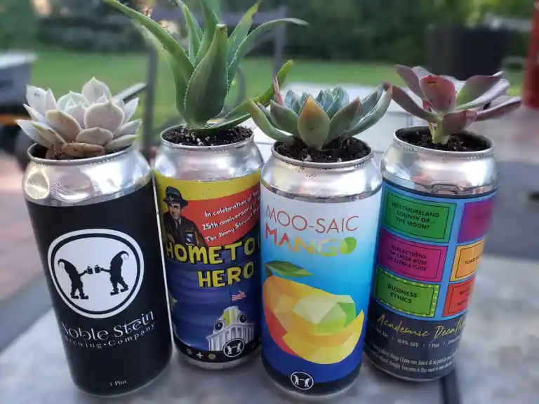
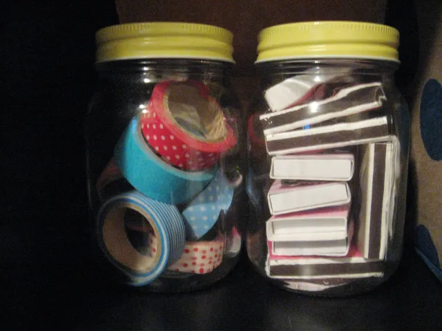
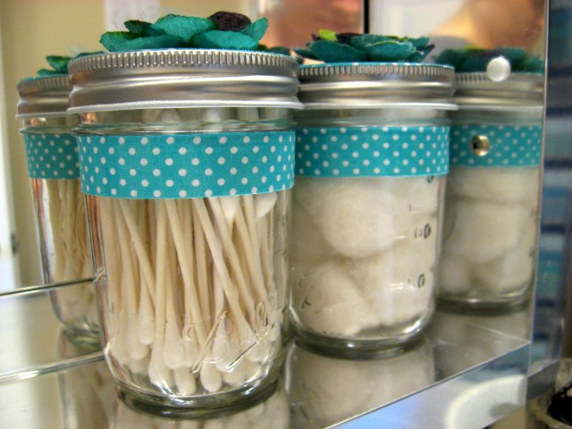
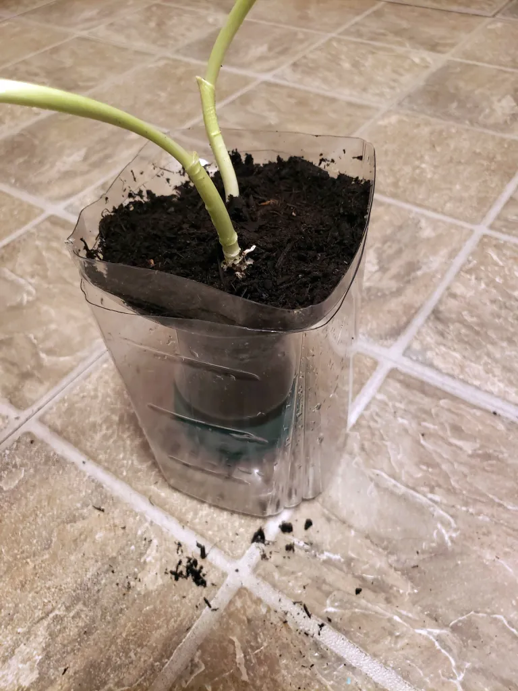
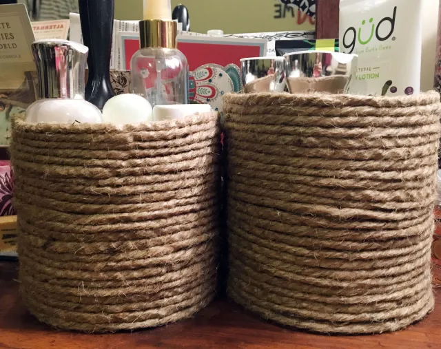

Upcycled Items
DIY &craft ideas
SEASONAL
HOLIDAY CRAFTS
ABOUT

HERE WE ARE MAKING SODA CANS INTO PLANTATING HERBS
WHAT
IS
UPCYCLE?
MORE...
Remove Labels from Glass Jars to Use as Food or Craft Storage


Jars can be reused for so many storage options: food, craft supplies, beauty items, etc. Learn
how to easily get
those stubborn labels off and upcycle your jars!

Reuse oatmeal container to organize your
vanity
Oatmeal containers are perfect for organizing lotion bottles, deodorant, and brushes on your
dresser or vanity.
A little bit of rope and hot glue go a long way! I’ve had these on my dresser for years. I love them!
